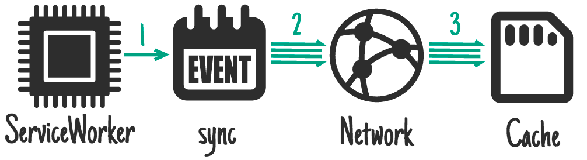
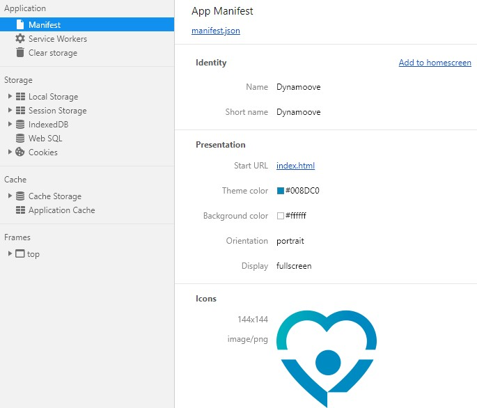

Progressive Web Apps
Atelier Waigéo N°2
20 Décembre 2018
Sommaire
- Présentation PWA
- Fonctionnalités PWA
- Navigateurs compatibles
- Clients
Présentation PWA
- Une application performante quasi-native
- Installation instantanée sans téléchargement et sans contrainte des Stores
- Boost engagement mobile
- App First
- Multi-plateforme
- Amélioration visibilité SEO
Fonctionnalités PWA
- Service Workers
- Web App Manifest
- HTTP/2
- Et plus encore...
Service Workers
L'atout N°1 pour créer des fonctionnalités avancées indépendantes afin d'offrir une expérience utilisateur accélérée et inédite
- Https uniquement
- Synchronisation en arrière plan
- Navigation en mode Hors-ligne
- Push Notifications
Synchronisation
en arrière plan

Navigation
en mode Hors-ligne
Web Push
Notifications
Web App Manifest
permet d'installer son application web mobile/desktop directement sur l'écran d'accueil de l'appareil de l'utilisateur
Manifest.json
Manifest.json
HTTP/2
permet la compression des en-têtes, une gestion intelligente pour la diffusion des paquets, la priorisation et la parallélisation des requêtes.
Nouvelles technologies
via navigateur
- Geolocation / Geofencing
- Video et Image Capture
- API Web Bluetooth
Navigateurs compatibles
- Support natif : Chrome, Edge, Opera
- Firefox très proche
- Safari : une première implémentation bridée

Clients
des retours d'expériences qualifiant
PWA comme l'avenir du mobile
- Starbucks
- Uber
- Lyft
- Forbes